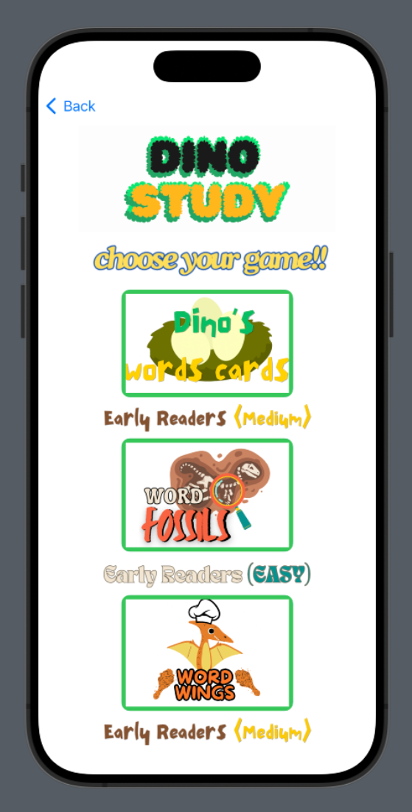
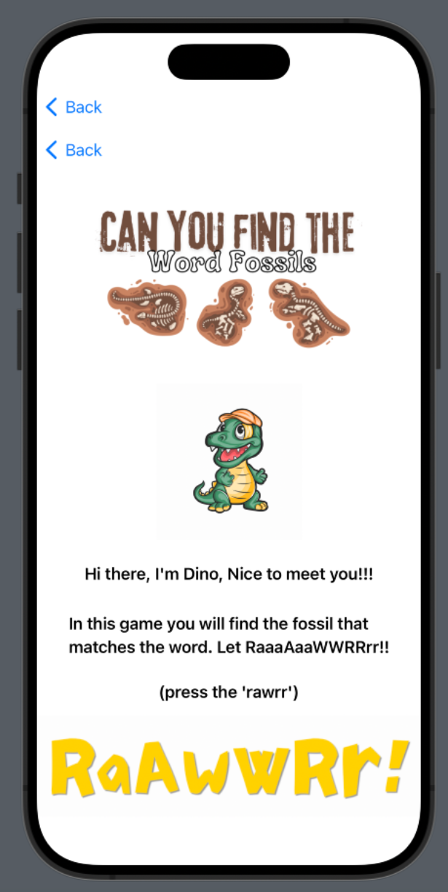
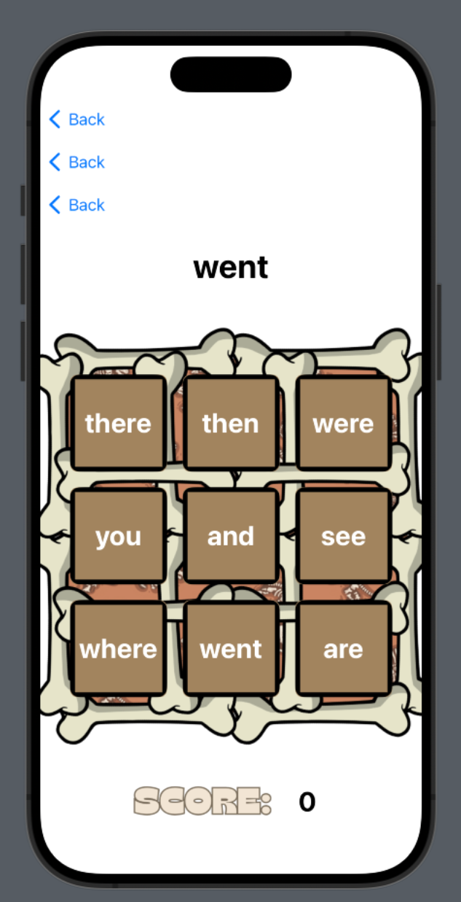

You may have seen the Dino Study reading app that helps young readers improve in their memorization and reading.
  
Now introducing Dino Study(math). And YES! just like last time, math is easy wherever you go as well.
Get started